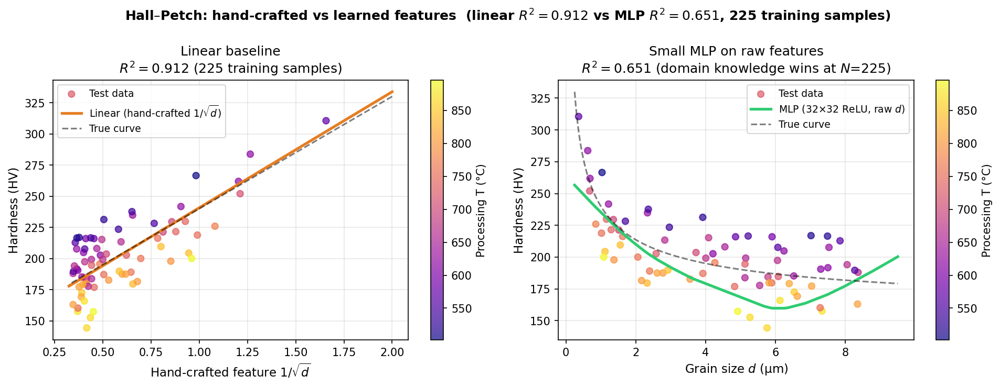
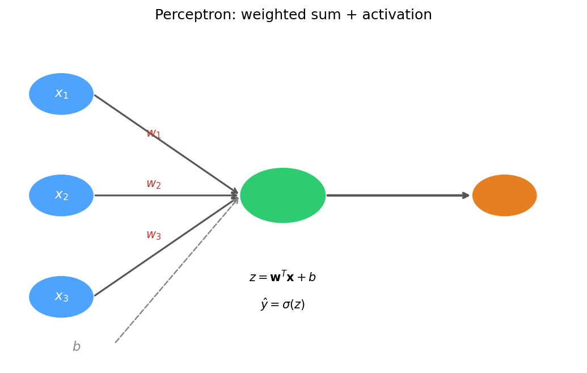
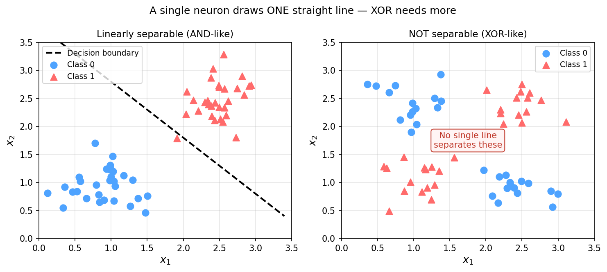
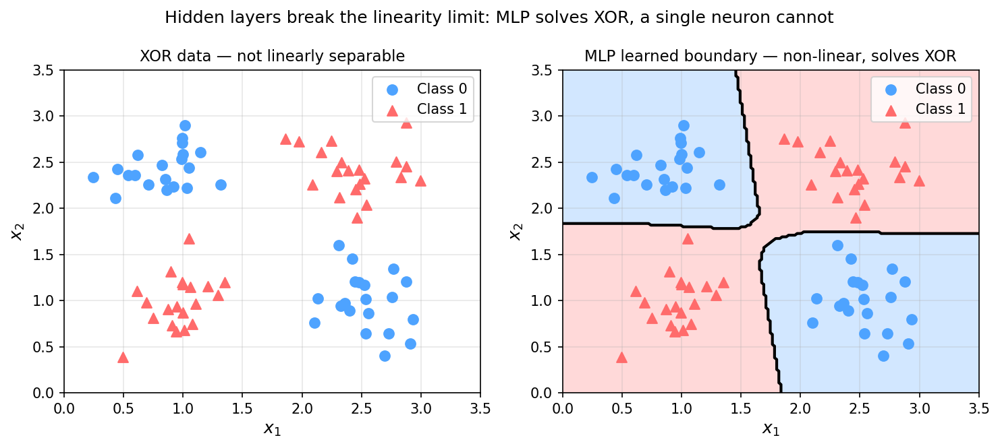
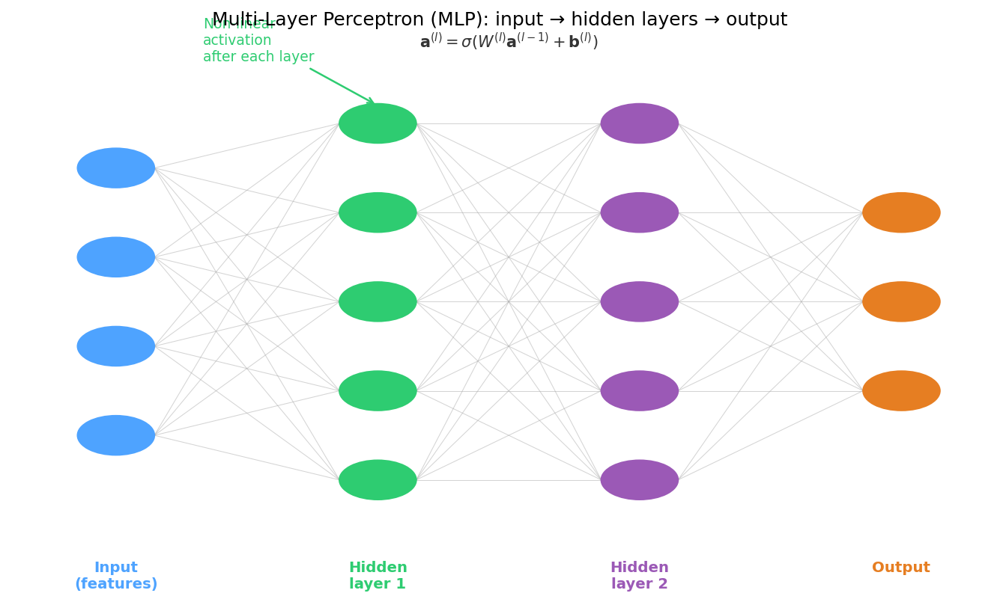
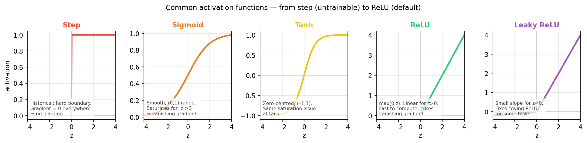
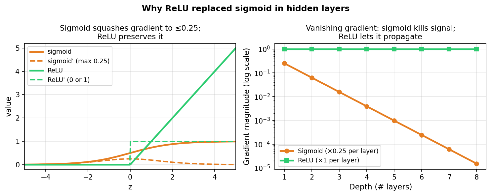
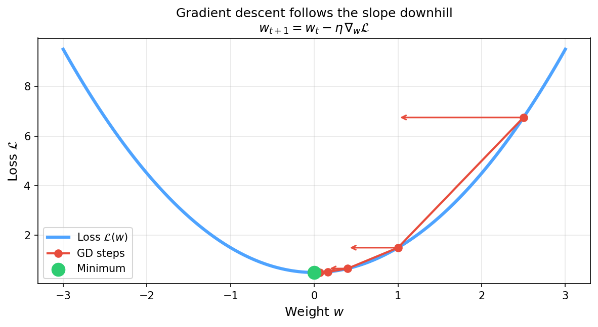
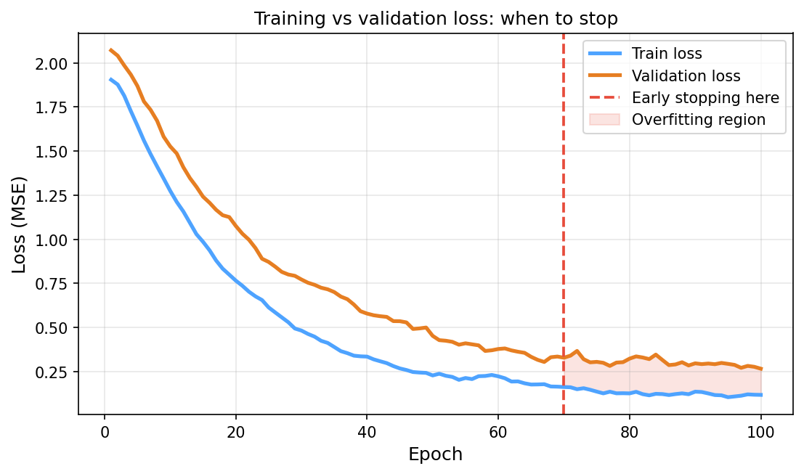
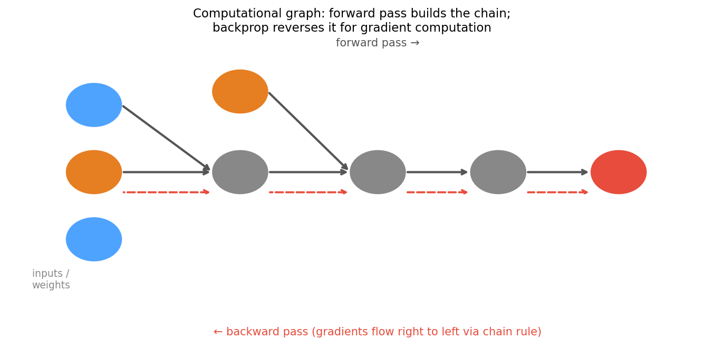

Data Science for Electron Microscopy
Week 5: Neural networks from first principles
FAU Erlangen-Nürnberg
Institute of Micro- and Nanostructure Research


Recap: where we left off
- Week 4: regression → gradient descent → honest validation.
- You can now fit a model to tabular EM data, diagnose overfitting with a train/val/test split, and report an honest \(R^2\) using
GroupKFoldto prevent the crop-vs-specimen leakage trap. - Key insight from Week 4: training a model is just minimising a loss — choose a loss, choose an optimiser, run the update rule \(\mathbf{w}_{t+1} = \mathbf{w}_t - \eta\,\nabla_\mathbf{w}\hat{R}\).
- Gap: the linear predictor \(\hat{y} = \mathbf{w}^T\mathbf{x}\) is limited to straight-line decisions — it cannot model the nonlinear relationships hiding in most EM datasets.
- Today’s question: what happens when we make the feature map \(\boldsymbol\phi(\mathbf{x})\) itself learnable? The answer is a neural network.
Today’s questions
- Why does a Hall–Petch relationship exist — and can a model discover it without being told \(d^{-1/2}\)? A single neuron cannot. A network with a hidden layer can learn the nonlinear transformation from data.
- Why does depth without nonlinearity collapse? Stack two linear maps and you get one linear map. Non-linear activations are what make depth meaningful.
- Road map: hand-crafted vs learned features (4) · perceptron: weights, bias, decision boundary (4) · learning rule & GD on a neuron (3) · XOR & the linearity limit (4) · MLPs as learned feature extractors (5) · activation functions: step → sigmoid → tanh → ReLU → softmax (6) · vanishing gradients → why ReLU won (3) · training a network: loss → gradients → update (3) · autograd / backprop intuition (4) · practicalities: init, overfitting, when NOT to use a deep net (3) · limits + Week 6 preview (2).
- Self-study:
notebooks/week05_tiny_mlp.ipynb— train a small MLP on a materials-property dataset and see why, with 225 training samples, it does NOT yet beat a linear fit on the correct hand-crafted \(1/\sqrt{d}\) feature (\(R^2\approx0.91\) vs \(R^2\approx0.65\)) — and what that teaches about learned vs domain features.
Hand-crafted features: the Hall–Petch story
- Hall–Petch law: \(H = H_0 + k\,d^{-1/2}\) — grain size \(d\) (µm) predicts hardness \(H\) (HV) via a known functional form.
- A materials scientist hand-engineers the feature \(\phi(d) = d^{-1/2}\) and fits a linear model in that feature. This works — but requires knowing the right transformation in advance.
- What if the relationship is more complex? Composition, processing temperature, cooling rate, phase fractions — the correct feature transformation is not always known.
- What a network does instead: present raw inputs \((d, T_\text{proc}, \ldots)\) and let the hidden layers discover the useful nonlinear transformation automatically.
Hall–Petch: hand-crafted vs learned features

Left: linear regression on the hand-crafted \(1/\sqrt{d}\) feature achieves \(R^2\approx0.91\) (225 training samples). Right: a small MLP on raw grain size \(d\) only reaches \(R^2\approx0.65\) — with limited data, domain knowledge still wins over learned features.
The information bottleneck: from micrograph to scalar
- A 1024×1024 BSE micrograph has \(\sim 10^6\) pixels of state — one float per pixel.
- Collapsing to an ASTM grain-size number discards \(\sim 10^6{:}1\) — almost everything.
- A single hand-crafted descriptor answers exactly the question it was designed to answer, and nothing else Sandfeld, Stefan et al., (2024).
- Learned representations let a network decide which aspects of the \(10^6\)-pixel field are relevant for the target — compressing adaptively, not blindly.
- Bottom line: hand-crafted metrics are lossy by construction; learned features find a better compression for the task at hand. But “better” only holds when you have enough data and an honest validation strategy.
From fixed to learned feature maps
- Fixed-basis model (everything up to Week 4): \[\hat{y} = \sum_j w_j\,\phi_j(\mathbf{x}), \quad \phi_j \text{ chosen by the engineer before training.}\]
- Fourier, wavelet, polynomial, \(1/\sqrt{d}\) — all fixed. The model learns only the coefficients \(w_j\).
- Neural-network model: make \(\phi_j(\mathbf{x};\theta)\) learnable — the feature map adapts to the data.
- The architecture decides what kinds of features are easy to learn; the training loop finds the specific values.
Hand-crafted features encode what the engineer knows. Learned features encode what the data contains.
The perceptron: weights, bias, and activation

A single perceptron: each input \(x_i\) is multiplied by a weight \(w_i\), the bias \(b\) is added, and the sum passes through an activation function \(\sigma\).
Perceptron: the decision boundary picture
- With two inputs, \(z = w_1 x_1 + w_2 x_2 + b\) defines a linear score.
- The boundary \(z = 0\) is a straight line in \((x_1, x_2)\) space (a hyperplane in higher dimensions).
- Positive side \(z > 0\): neuron fires (output ≈ 1). Negative side \(z < 0\): neuron silent (output ≈ 0).
- The learning rule adjusts \(\mathbf{w}\) and \(b\) so that the boundary separates the two classes correctly.
- Key constraint: one neuron = exactly one straight line. It cannot curve.
ADALINE and gradient descent on a neuron
- Historical arc (compressed): MCP neuron (1943) → hard threshold, fixed weights, no learning. Perceptron (1957) → trainable weights, hard threshold, error-correction learning rule. ADALINE (1960) → continuous output, MSE loss, full gradient-based update.
- ADALINE treats the neuron output as a continuous number during training and applies gradient descent on MSE: \[\nabla_\mathbf{w}\hat{R} = \frac{2}{N}\mathbf{X}^T(\mathbf{X}\mathbf{w} - \mathbf{y})\]
- This is the Week 4 GD update with the same MSE loss — the linear regression recipe, just at the level of a single neuron.
- Key advance: moving the gradient signal before the threshold makes learning smooth and stable.
The XOR problem: linearity’s hard limit

Left: AND-like data — one straight line separates the classes. Right: XOR data — no single straight line can separate both classes, regardless of slope or offset.
Why XOR requires a hidden layer
- With a hidden layer, the network first maps inputs to a new learned feature space where the classes become linearly separable.
- Example: a 2→2→1 network can learn an internal representation where the XOR pattern is separable by a final linear boundary.
- Key intuition: the hidden layer warps the input space. After warping, a curved boundary in the original space becomes a straight line in the learned space.
- The number of hidden neurons controls how flexible the warp is.
“A single neuron draws one straight line. A hidden layer bends the space so that line can solve curves.” Goodfellow, Ian et al., (2016)
MLP solves XOR: a non-linear decision boundary

Left: XOR data — linearly inseparable. Right: an MLP with two hidden layers learns a curved boundary that correctly classifies all four quadrants.
MLP architecture: layers, weights, and activations

A multi-layer perceptron (MLP): the hidden layers (green, purple) learn internal representations; the output layer (orange) applies a linear map to those representations to produce the prediction.
Dense layer: the matrix multiply view
- A layer with input width \(D\) and output width \(M\) computes: \[\mathbf{z} = W\mathbf{x} + \mathbf{b}, \qquad \mathbf{a} = \sigma(\mathbf{z})\] where \(W \in \mathbb{R}^{M \times D}\), \(\mathbf{b} \in \mathbb{R}^M\), \(\mathbf{x} \in \mathbb{R}^D\), \(\mathbf{a} \in \mathbb{R}^M\).
- For a batch of \(N\) samples: \(A = \sigma(WX + \mathbf{b})\) with \(X \in \mathbb{R}^{D \times N}\) — the bias broadcasts across samples.
- Parameter count for one layer: \(M \times D\) weights + \(M\) biases = \(M(D+1)\).
- Example: \(D=20\) features, \(M=64\) hidden units → 1,344 parameters in this layer alone.
Why non-linearity is non-negotiable
- What happens with purely linear layers? \[\mathbf{a}^{(2)} = W^{(2)}\bigl(W^{(1)}\mathbf{x}+\mathbf{b}^{(1)}\bigr)+\mathbf{b}^{(2)} = \underbrace{(W^{(2)}W^{(1)})}_{\tilde{W}}\mathbf{x}+\tilde{\mathbf{b}}\]
- Two linear layers collapse into one linear layer. By induction: any depth of purely linear layers has the expressivity of a single affine map. Depth without nonlinearity is no depth at all.
- Non-linear activation functions break this collapse — each layer can represent something the previous layer cannot.
- The XOR boundary we just saw is impossible without nonlinearity.
MLPs learn hierarchical features
- Layer 1 (close to input): learns simple combinations of raw features — e.g. “large grain AND high temperature.”
- Layer 2 (deeper): learns combinations of Layer 1 features — e.g. “large-grain–high-temp AND low Cr fraction.”
- Output layer: applies a final linear map to the last hidden layer’s features to produce \(\hat{y}\).
- Universal approximation: a single sufficiently wide hidden layer can in principle approximate any continuous function to arbitrary accuracy Goodfellow, Ian et al., (2016). In practice, depth > width is more efficient.
Activation functions: a visual survey

Five activation functions from most historical (step) to most commonly used today (Leaky ReLU). Note how ReLU preserves gradient for positive inputs, while sigmoid and tanh saturate.
Step and sigmoid: historical activations
- Step function: \(\sigma(z) = \mathbb{1}[z \geq 0]\). Output is 0 or 1. Derivative is zero everywhere — no gradient, no learning. Used in MCP neuron and original perceptron; unusable with gradient descent.
- Sigmoid: \(\sigma(z) = (1+e^{-z})^{-1}\). Smooth, output in \((0,1)\) — interpretable as probability. Gradient is \(\sigma'(z) = \sigma(z)(1-\sigma(z))\), max value 0.25 at \(z=0\). Saturates to near-zero gradient for \(|z| > 3\).
- Historical role: sigmoid dominated from 1986 (backprop paper) to around 2012. Its saturation was the main barrier to deep networks.
- Today: sigmoid is still used at the output layer for binary classification — but almost never in hidden layers.
Tanh and ReLU: the modern defaults
- Tanh: \(\sigma(z) = \tanh(z)\). Output in \((-1,+1)\), zero-centred. Gradient: \(1-\tanh^2(z)\), max 1.0 at \(z=0\), but still saturates at tails. Better than sigmoid for hidden layers in shallow networks because zero-centering reduces internal covariate shift.
- ReLU (Rectified Linear Unit): \(\sigma(z) = \max(0, z)\). Linear for \(z > 0\), exactly zero for \(z < 0\). Gradient: exactly 1 for all \(z > 0\). Does not saturate on the positive side. Computationally trivial: one comparison, no exponential.
- Why ReLU changed everything: it enabled training networks with 10–100 layers by keeping gradients alive. AlexNet (2012) used ReLU and revolutionised computer vision.
Softmax: multi-class output
- For \(K\)-class classification, the output layer computes a probability vector via softmax: \[\hat{p}_k = \frac{e^{z_k}}{\sum_{j=1}^{K} e^{z_j}}, \qquad \sum_k \hat{p}_k = 1, \quad \hat{p}_k > 0.\]
- Always use softmax with cross-entropy loss — not with MSE.
- Cross-entropy loss: \(\mathcal{L} = -\sum_k y_k \log \hat{p}_k\) (where \(y_k = 1\) for the true class, 0 otherwise).
- Why not sigmoid per class? Sigmoid outputs are independent and can sum to more than 1. Softmax enforces the probability simplex — physically correct.
| Task | Output activation | Loss |
|---|---|---|
| Regression | identity | MSE or MAE |
| Binary classification | sigmoid | binary cross-entropy |
| Multi-class | softmax | categorical cross-entropy |
Vanishing gradients: sigmoid kills depth
- Chain rule: gradient of the loss with respect to weights in layer \(l\) requires multiplying the activation derivative at every layer from the output back to \(l\).
- Sigmoid derivative: \(\sigma'(z) = \sigma(z)(1-\sigma(z)) \leq 0.25\).
- Through 8 sigmoid layers: gradient magnitude \(\leq 0.25^8 \approx 2 \times 10^{-4}\) — a 5000× reduction.
- Effect: weights in early layers barely update; the network effectively fails to learn the early-layer features Goodfellow, Ian et al., (2016).
- Historical consequence: this is why deep learning was stuck from 1986 to 2012. Networks beyond 5 layers were almost untrainable with sigmoid activations.
Why ReLU won: gradient propagates intact

Left: sigmoid gradient saturates to ≤0.25, while ReLU gradient is exactly 1 for \(z>0\). Right: at depth 8, sigmoid gradients have shrunk by four orders of magnitude compared to the first layer; ReLU gradients remain at full strength.
Training a network: loss → gradients → update
- Same ERM framework as Week 4: \[\hat{R}(\theta) = \frac{1}{N}\sum_{i=1}^{N} \mathcal{L}\!\bigl(f_\theta(\mathbf{x}_i),\, y_i\bigr), \qquad \theta \leftarrow \theta - \eta\,\nabla_\theta \hat{R}\] where \(\theta\) now denotes all weights and biases in all layers.
- What changes vs. Week 4: the model \(f_\theta\) is a composition of nonlinear maps. The update rule is identical.
- SGD and Adam still apply — Adam at \(\eta = 0.001\) is the default starting point.
- The loss surface is now non-convex — multiple local minima exist. In practice, well-initialised networks find local minima that generalise well.
Loss landscape: the GD picture for deep networks

Gradient descent follows the slope of the loss surface downhill, one small step at a time. The update rule \(w_{t+1} = w_t - \eta\nabla_w\mathcal{L}\) is identical to Week 4; the surface is now non-convex with many local minima.
Training loss and early stopping

Training loss (blue) and validation R² (orange) versus training epoch. Training loss decreases monotonically; validation R² peaks around epoch 70 and then levels off — the optimal stopping point.
Autograd: building the computational graph
- Every operation in a neural network (multiply, add, activation) can be thought of as a node in a computational graph.
- Forward pass: execute the graph left to right — compute the loss. Store every intermediate result.
- Reverse-mode automatic differentiation (backprop): traverse the graph right to left. At each node, multiply the incoming gradient by the local derivative — the chain rule applied automatically.
- Modern libraries (PyTorch, JAX, TensorFlow) do this for any code that uses their tensor types. You write
loss.backward()and gradients appear in.gradattributes.
Backprop: reverse-mode chain rule on the graph

Computational graph for one neuron: forward pass (black arrows, left to right) computes the loss; backward pass (red dashed arrows, right to left) propagates gradients via the chain rule at each node.
Backprop: what you need vs optional self-study
- Must know: backprop computes exact gradients for all weights via one reverse traversal of the computational graph (the chain rule applied at each node).
- Must know: modern libraries (
loss.backward(),grad()) implement this automatically for any differentiable code. You write the forward pass; the library writes the backward pass for you. - Must know: if a layer’s activation saturates (e.g. sigmoid at \(|z| \gg 0\)), its local derivative \(\approx 0\) and gradient flow stops — the vanishing-gradient problem.
- Optional self-study: full derivation — Jacobians per layer, general backprop algorithm, numerical verification via finite differences. See
data_science_for_em/01_intro/01_autograd.qmdfor an implementation walkthrough in PyTorch.
Initialisation: symmetry breaking matters
- Zero initialisation: all neurons compute identical outputs, gradients, updates → hidden layer collapses to one effective neuron. Symmetry is never broken. Always wrong for hidden layers.
- Random normal (too large): activations saturate immediately (especially sigmoid/tanh); gradients vanish before training begins.
- Xavier / Glorot initialisation: \(w_i \sim \mathcal{U}\!\bigl(-\tfrac{\sqrt{6}}{\sqrt{D_\text{in}+D_\text{out}}}, \tfrac{\sqrt{6}}{\sqrt{D_\text{in}+D_\text{out}}}\bigr)\) — scales variance to keep activation statistics stable through depth. Default for sigmoid/tanh layers.
- He initialisation: \(w_i \sim \mathcal{N}(0, \sqrt{2/D_\text{in}})\) — accounts for ReLU zeroing half its inputs. Default for ReLU layers. Used by sklearn and PyTorch by default.
Overfitting in neural networks
- Neural networks have far more parameters than linear models. A 2-layer MLP with 64 neurons each has \(>5000\) parameters — easily more than the number of training samples in small EM datasets.
- Overfitting symptoms: training loss ≈ 0, validation loss much larger; validation R² plateaus then decreases while training R² keeps climbing.
- Cures (in order of convenience):
- More data — always the first choice when possible.
- Early stopping — free, no hyperparameters to tune.
- Dropout — randomly zero out 20–50% of neurons per forward pass; forces redundant representations.
- Reduce model depth or width.
- L2 regularisation on weights (weight decay).
When NOT to use a deep net for EM data
- Small tabular dataset (\(N < 200\) specimens): a linear model (Ridge) or gradient-boosted tree almost always generalises better. More parameters than samples → variance dominates.
- Known physics specifies the feature map: if you know the relationship is \(H \propto d^{-1/2}\), embed that. Learning it costs data and compute you do not need to spend.
- Interpretability is mandatory: white-box models (Bragg, Hall–Petch, CALPHAD) are preferable when the physics is understood and peer reviewers expect mechanistic insight.
- Spatial / image data without spatial invariances: dense MLP on flattened 1024×1024 pixels requires \(\sim 10^9\) weights in the first layer — wrong architecture. Use a CNN (Week 6).
Neural network limits: what UAT does NOT promise
- Universal approximation (what it says): a sufficiently wide MLP with one hidden layer can approximate any continuous function to arbitrary accuracy Goodfellow, Ian et al., (2016).
- What it does NOT say:
- That gradient descent will find that approximation.
- That you have enough data to train it.
- That it will generalise to new inputs outside the training distribution.
- Practical limits for EM data science:
- Small \(N\) (tabular, \(< 200\) samples): tree models and Ridge almost always win.
- Spatial data: dense MLP fails at scale — wrong inductive bias (ignores locality). Needs CNN (Week 6).
- Distribution shift: a network trained on one EM instrument/operator may fail on another.
Week 6 preview: CNNs for microscopy images
- The problem with dense MLPs on images: a 1024×1024 pixel image flattened to a vector requires \(\sim 10^9\) weights in the first hidden layer. With \(N < 1000\) training images, the model memorises noise.
- The solution: build two inductive biases into the architecture — locality (each neuron only sees a small patch) and weight sharing (the same filter is applied at every position).
- Convolution implements both constraints. It is a constrained version of the dense matrix multiply, with most weights forced to zero and the remaining weights tied across positions.
- Week 6: convolutional layers, feature maps, receptive fields, pooling; applications to grain-boundary detection, atom-column segmentation, phase classification in HAADF and EBSD data.
Dropout: practical regularisation
- Dropout (Srivastava et al., 2014): during each forward pass of training, randomly zero out a fraction \(p\) (typically 0.2–0.5) of neurons in a layer.
- Why it works: forces each neuron to learn features that are useful without relying on specific other neurons — reduces co-adaptation and increases redundancy.
- At test time: all neurons active; outputs scaled by \((1-p)\) to match training expectations.
- Practical rule: add dropout after hidden layers, not after the output layer. Standard starting point: \(p=0.2\) (drop 20% of hidden activations).
- Dropout is effectively training an ensemble of \(2^N\) thinned networks simultaneously — each mini-batch trains a different sub-network.
The complete training recipe
- Step 1 — Architecture: choose depth, width, and activation function. Start with 2–3 hidden layers, 32–128 neurons, ReLU.
- Step 2 — Initialise: use He initialisation for ReLU layers (framework default). Never initialise to zero.
- Step 3 — Normalise inputs:
StandardScaleron the training set; apply the same scaling to validation and test. (Same hygiene as Week 4.) - Step 4 — Train: Adam at \(\eta = 0.001\), mini-batch size 32–64, monitor validation loss, apply early stopping.
- Step 5 — Evaluate honestly: use the same
GroupKFoldstrategy from Week 4. A neural network does not exempt you from honest validation.
MLP for materials property prediction: a complete example
- Problem: predict Vickers hardness from tabular features: grain size, processing temperature, Cr fraction, Mn fraction — a multi-input regression task typical of CALPHAD-adjacent datasets.
- Encoding: standardise all four inputs with
StandardScaler(fit on train only). - Architecture: 4 → 64 → 64 → 1 (two hidden layers, ReLU activations, identity output).
- Training: Adam at \(\eta = 0.001\), batch size 32, early stopping on 20% validation holdout,
n_iter_no_change = 30. - Baseline comparison: always compare to Ridge regression on the same features. If the MLP does not outperform Ridge, the dataset is too small or the relationship is too linear for depth to help.
Summary: the week in five points
- A single neuron computes \(\hat{y} = \sigma(\mathbf{w}^T\mathbf{x} + b)\) — a weighted sum plus bias, passed through a nonlinearity. It draws exactly one hyperplane.
- Non-linearity is non-negotiable: depth without nonlinear activations is a single affine map. ReLU is the default for hidden layers.
- MLPs as feature extractors: hidden layers learn intermediate representations; the output layer applies a linear map. Deeper = more abstract features.
- Backpropagation = reverse-mode automatic differentiation. The chain rule traverses the computational graph right to left. Libraries automate this; you write the forward pass.
- Practical rules: He init; Adam at \(\eta = 0.001\); early stopping on validation loss; GroupKFold for honest evaluation; use simpler models when \(N < 200\).
Continue
References

©Philipp Pelz - FAU Erlangen-Nürnberg - Data Science for Electron Microscopy